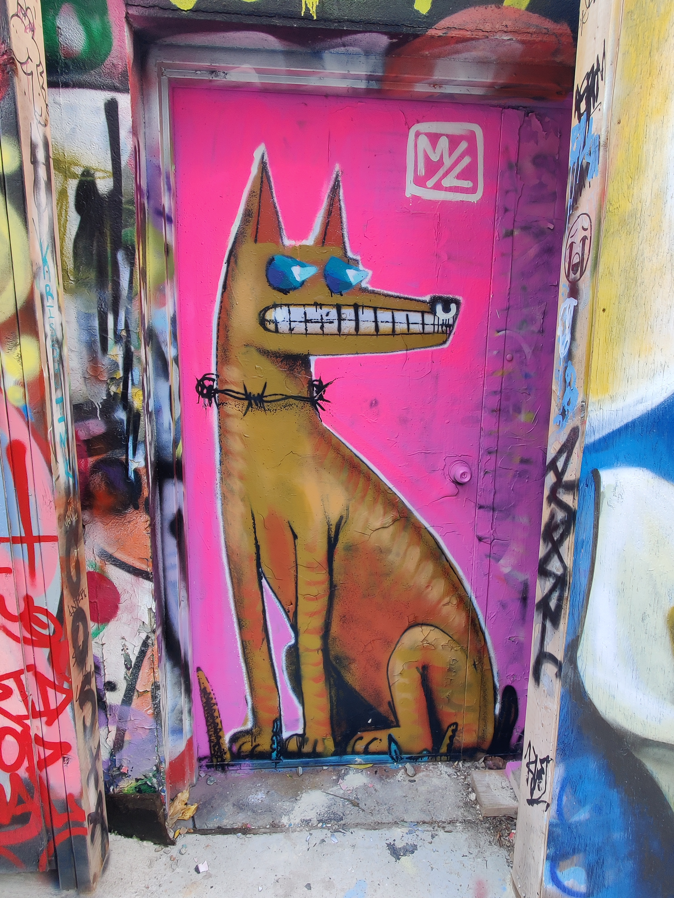

Audio recording of a song by Post Malone, Sunflower, October 18, 2018. Retrrieved from Youtube.com.Youtube. (2018, October 18). Sunflower [Video]. Youtube. https://youtu.be/ApXoWvfEYVU?si=1DDdIJ41k_qWI3LM
My Images
A vibrant graffiti mural of a dragon's face painted on a brick wall. The dragon is depicted with green scales, sharp white teeth, and pink whiskers. Taken on November 2 2024 at Queen Street West, Old Toronto.

A graffiti artwork of a stylized dog on a pink background painted over a doorway. Taken on November 2 2024 at Queen Street West, Old Toronto.
A cartoonish red and teal devil character painted on a brick wall with graffiti. The character has a mischievous expression, large eyes, fanged teeth, and tiny wings. Taken on November 2 2024 at Queen Street West, Old Toronto.
.png) Yana Manzyukova
Yana Manzyukova